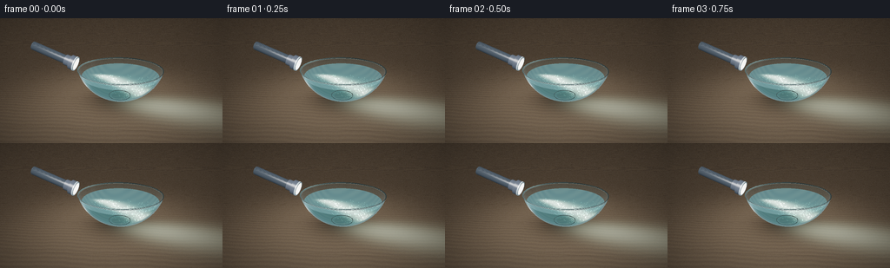
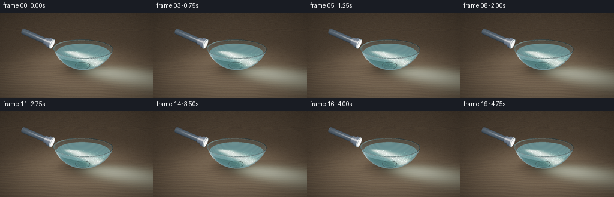
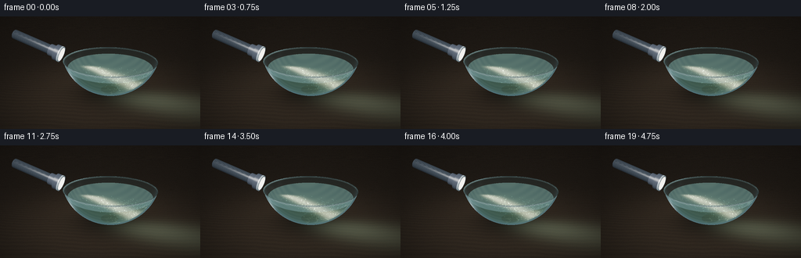

CODING AGENTS AS PIXEL WORLD MODELS
traex/GPT-6.1-Sol · phygen_047
点击播放 · 原生 RGB 像素
逐轮保存的候选
回放视频、检查图与代码变化。
每份候选均可单独播放。实际图片检查记录在下方工具轨迹中。
候选 01播放与检查图
点击播放 · 原生 RGB 像素


展开代码变化
--- 上一保存版本
+++ 本次保存版本
@@ -0,0 +1,241 @@
+from pathlib import Path
+import numpy as np
+from PIL import Image, ImageDraw, ImageFilter
+import artifact_io
+
+# Analytic geometry and volume scattering; no image assets are used.
+W,H=768,432
+rng=np.random.default_rng(47)
+cam=np.array([0.,4.4,8.2]); target=np.array([-.45,1.05,0.])
+fwd=target-cam; fwd/=np.linalg.norm(fwd)
+right=np.cross(fwd,[0,1,0]); right/=np.linalg.norm(right)
+up=np.cross(right,fwd)
+focal=590.
+yy,xx=np.mgrid[0:H,0:W]
+dirs=fwd+(xx[...,None]-W/2)/focal*right-(yy[...,None]-H/2)/focal*up
+dirs/=np.linalg.norm(dirs,axis=-1)[...,None]
+origin=np.array([-2.25,1.91,-.05])
+axis=np.array([.925,-.34,.17]); axis/=np.linalg.norm(axis)
+center=np.array([0,2.2,0.]); rad=np.array([2.15,2.05,2.15])
+
+def ellipsoid(r):
+ oc=(cam-center)/r; d=dirs/r
+ A=np.sum(d*d,-1); B=np.sum(oc*d,-1); C=np.sum(oc*oc)-1
+ disc=B*B-A*C; root=np.sqrt(np.maximum(disc,0))
+ return (-B-root)/A,(-B+root)/A,disc>0
+
+def lighting(n,p):
+ # Small area-light reflections on polished edges.
+ v=cam-p; v/=np.maximum(np.linalg.norm(v,axis=-1)[...,None],1e-5)
+ L=np.array([-3.5,6,4])-p; L/=np.maximum(np.linalg.norm(L,axis=-1)[...,None],1e-5)
+ half=L+v; half/=np.maximum(np.linalg.norm(half,axis=-1)[...,None],1e-5)
+ return np.maximum(np.sum(n*L,-1),0),np.maximum(np.sum(n*half,-1),0)
+
+def project(p):
+ v=p-cam; z=np.dot(v,fwd)
+ return np.stack([W/2+np.dot(v,right)*focal/z,H/2-np.dot(v,up)*focal/z],-1),z
+
+# Transparent ellipsoidal vessel and actual liquid ray interval.
+tnear,tfar,valid=ellipsoid(rad)
+pfront=cam+tnear[...,None]*dirs
+pback=cam+tfar[...,None]*dirs
+shell_front=valid&(pfront[...,1]>=.19)&(pfront[...,1]<=1.75)
+shell_back=valid&(pback[...,1]>=.19)&(pback[...,1]<=1.75)
+ti,to,vin=ellipsoid(np.array([2.10,2.00,2.10]))
+waterlevel=1.43
+plane=(waterlevel-cam[1])/dirs[...,1]
+bottom=(.22-cam[1])/dirs[...,1]
+wstart=np.maximum(ti,plane); wend=np.minimum(to,bottom)
+wmask=vin&(wend>wstart)&(wend>0)
+wlen=np.where(wmask,wend-wstart,0)
+waterp=cam+plane[...,None]*dirs
+surfacemask=(waterp[...,0]**2+waterp[...,2]**2< (2.1**2*(1-((waterlevel-2.2)/2.0)**2)))&(plane>0)
+
+# Background: a dim, grained walnut laboratory tabletop.
+tablet=-cam[1]/dirs[...,1]
+ptable=cam+tablet[...,None]*dirs
+X=ptable[...,0]; Z=ptable[...,2]
+grain=(np.sin(25*Z+1.1*np.sin(1.9*X)+.3*np.sin(8*X)) + .3*np.sin(96*Z+2*np.sin(X*2)))*.5
+noise=rng.normal(0,.0025,(H,W))
+falloff=.45+.6*np.exp(-((X+.3)**2+(Z-.5)**2)/25)
+base=np.empty((H,W,3),np.float32)
+base[:]=np.stack([.071+grain*.009,.055+grain*.007,.040+grain*.004],-1)*falloff[...,None]
+base+=noise[...,None]
+shadow=1-.74*np.exp(-((X/1.85)**2+(Z/1.55)**2)*1.3)
+base*=shadow[...,None]
+# Tiny seams in the broad wood boards.
+seam=np.exp(-((np.mod(Z+2.6,2.6)-.012)/.012)**2)
+base*=1-.25*seam[...,None]
+base[tablet<0]=[.014,.019,.023]
+
+# Cylinder intersection for the machined black flashlight, including end caps.
+def cylinder(start,end,radius):
+ a=np.array(start); b=np.array(end); v=b-a; length=np.linalg.norm(v); v/=length
+ oc=cam-a; dv=np.sum(dirs*v,-1); ov=np.dot(oc,v)
+ dp=dirs-dv[...,None]*v; op=oc-ov*v
+ A=np.sum(dp*dp,-1); B=np.sum(dp*op,-1); C=np.dot(op,op)-radius**2
+ discriminant=B*B-A*C
+ t=(-B-np.sqrt(np.maximum(discriminant,0)))/np.maximum(A,1e-9)
+ pos=cam+t[...,None]*dirs; along=np.sum((pos-a)*v,-1)
+ good=(discriminant>0)&(along>=0)&(along<=length)&(t>0)
+ norm=pos-a-along[...,None]*v; norm/=radius
+ dist=np.where(good,t,1e9)
+ for q,normal in [(a,-v),(b,v)]:
+ tcap=np.dot(q-cam,v)/np.where(abs(dv)>1e-8,dv,1e-8)
+ pc=cam+tcap[...,None]*dirs
+ ok=(np.sum((pc-q)**2,-1)<radius*radius)&(tcap>0)&(tcap<dist)
+ dist=np.where(ok,tcap,dist); norm=np.where(ok[...,None],normal,norm)
+ return dist,norm
+
+flashdist=np.full((H,W),1e9); flashcolor=np.zeros_like(base)
+# rear extends beyond the frame, so the source reads as a real off-screen handheld torch.
+parts=[(-2.45,-.47,.225,'body'),(-.58,-.23,.28,'neck'),(-.29,-.065,.375,'head'),(-.073,0,.382,'bezel'),(-.006,.006,.328,'lens')]
+for start,end,r,material in parts:
+ a=origin+axis*start;b=origin+axis*end
+ dist,norm=cylinder(a,b,r); p=cam+dist[...,None]*dirs
+ diff,spec=lighting(norm,p)
+ along=np.sum((p-origin)*axis,-1)
+ if material=='body':
+ ribs=.6+.4*(.5+.5*np.cos(along*94))**4
+ col=np.stack([.017+.05*diff*ribs,.023+.06*diff*ribs,.029+.071*diff*ribs],-1)+spec[...,None]**65*.2
+ # Knurled cross-hatching gives scale to the barrel.
+ texture=.86+.14*np.cos(p[...,1]*160+along*100)*np.cos(p[...,2]*160-along*100)
+ col*=texture[...,None]
+ elif material=='lens':
+ radial=np.linalg.norm(p-(origin+axis*.006),axis=-1)/r
+ col=np.zeros_like(base)+np.array([2.9,2.55,1.9])[None,None,:]*(1-.28*radial[...,None])
+ elif material=='bezel':
+ col=np.stack([.07+.22*diff,.09+.26*diff,.1+.28*diff],-1)+spec[...,None]**55*.9
+ else:
+ rings=.7+.3*np.cos(along*112)**8
+ col=np.stack([.019+.07*diff*rings,.024+.08*diff*rings,.029+.1*diff*rings],-1)+spec[...,None]**70*.25
+ m=dist<flashdist; flashcolor[m]=col[m]; flashdist[m]=dist[m]
+
+# Suspended motes, independently advected by a gentle circulation.
+particles=[]
+while len(particles)<950:
+ p=np.array([rng.uniform(-2,2),rng.uniform(.3,1.42),rng.uniform(-2,2)])
+ if np.sum(((p-center)/np.array([2.06,1.96,2.06]))**2)<1:
+ particles.append(p)
+particles=np.array(particles)
+sizes=rng.uniform(.25,1.3,len(particles)); phases=rng.uniform(0,6.28,len(particles))
+
+frames=[]
+for frame in range(20):
+ t=frame/4
+ # Continuous sub-degree flashlight drift keeps the beam stable but alive.
+ lightaxis=axis+np.array([0,.009*np.sin(t*1.2),.008*np.sin(t*.9)])
+ lightaxis/=np.linalg.norm(lightaxis)
+ color=base.copy()
+ # Light scattered back onto the tabletop underneath the glass vessel.
+ q=ptable-origin; longitudinal=np.sum(q*lightaxis,-1)
+ perp=np.sum(q*q,-1)-longitudinal**2
+ spill=np.exp(-perp/(.5+.1*np.maximum(longitudinal,0))**2)*np.exp(-np.maximum(longitudinal,0)*.16)*(longitudinal>0)
+ color+=spill[...,None]*np.array([.18,.21,.17])
+ # Refracted, softly colored background visible through the murky liquid.
+ backp=cam+wend[...,None]*dirs
+ bx,bz=backp[...,0],backp[...,2]
+ warped=np.sin(19*bz+2*np.sin(2*bx)+.35*np.sin(t+bx*3))
+ background=np.stack([.026+.005*warped,.043+.006*warped,.041+.004*warped],-1)
+ # Slow surface-ripple caustics cast onto the curved inner wall.
+ caustic1=np.sin(9.0*bx+2.1*np.sin(5.8*bz+t*.5)+t*.4)
+ caustic2=np.sin(8.1*bz+1.9*np.sin(5.2*bx-t*.38)-t*.28)
+ caustic=np.exp(-((caustic1+caustic2)/.15)**2)
+ qb=backp-origin; sb=np.sum(qb*lightaxis,-1); rb=np.maximum(np.sum(qb*qb,-1)-sb*sb,0)
+ irradiance=np.exp(-rb/(.1+.16*np.maximum(sb,0))**2)*np.exp(-sb*.15)*(sb>0)
+ background+=(.05+.30*caustic)[...,None]*irradiance[...,None]*np.array([.80,.98,.71])
+ # Integrate single-scattered photons through the actual liquid interval.
+ samples=52
+ trans=np.ones((H,W),np.float32); scattered=np.zeros_like(color)
+ ds=wlen/samples
+ for k in range(samples):
+ s=wstart+(k+.5)/samples*wlen
+ p=cam+s[...,None]*dirs
+ q=p-origin; axial=np.sum(q*lightaxis,-1)
+ r2=np.maximum(np.sum(q*q,-1)-axial*axial,0)
+ width=.055+.058*np.maximum(axial,0)
+ cone=np.exp(-r2/np.maximum(width**2,1e-5)*.85)
+ halo=np.exp(-r2/(.11+.145*np.maximum(axial,0))**2)*.095
+ field=(cone+halo)*(axial>0)*np.exp(-np.maximum(axial-.65,0)*.21)
+ density=.46*(1+.16*np.sin(p[...,0]*7+np.sin(p[...,2]*5+t*.4))*np.sin(p[...,1]*9+p[...,2]*3-t*.6))
+ atten=np.exp(-density*ds)
+ # warmer in the white core, green/cyan in the diffusive shoulders
+ light=np.stack([1.38*cone+.14*halo,1.56*cone+.55*halo,1.30*cone+.44*halo],-1)
+ light*=np.exp(-np.maximum(axial-.65,0)*.20)[...,None]*(axial>0)[...,None]
+ scattered+=trans[...,None]*(1-atten)[...,None]*(light*2.4+np.array([.026,.048,.046]))
+ trans*=atten
+ watercolor=scattered+background*trans[...,None]
+ color=np.where(wmask[...,None],watercolor,color)
+ # A few coherent narrow rays feather out within the volume.
+ # Air only contains a faint cone, in contrast to luminous turbid water.
+ for k in range(12):
+ s=3.5+(k+.5)/12*6
+ p=cam+s*dirs; q=p-origin; axial=np.sum(q*lightaxis,-1)
+ r2=np.maximum(np.sum(q*q,-1)-axial*axial,0)
+ air=np.exp(-r2/(.045+.063*np.maximum(axial,0))**2)*(axial>0)*(axial<1.2)
+ color+=air[...,None]*np.array([.003,.0033,.0028])
+ # Glass surfaces: Fresnel reflection, thickness, edge highlights.
+ for pp,mask,strength in [(pback,shell_back,.45),(pfront,shell_front,1.)]:
+ normal=(pp-center)/(rad*rad); normal/=np.maximum(np.linalg.norm(normal,axis=-1)[...,None],1e-8)
+ ndv=np.abs(np.sum(normal*-dirs,-1)); fresnel=.028+.972*(1-ndv)**5
+ diff,spec=lighting(normal,pp)
+ reflected=np.stack([.05+.05*diff,.09+.075*diff,.105+.075*diff],-1)
+ vertical=np.exp(-((normal[...,0]+.75)/.06)**2)*np.exp(-((pp[...,1]-1.0)/.9)**2)
+ reflected+=vertical[...,None]*np.array([.20,.24,.25])
+ rimlight=np.exp(-((pp[...,1]-1.73)/.026)**2)
+ tint=np.array([.005,.013,.014])
+ layer=color*(1-fresnel[...,None]*.6*strength)+reflected*fresnel[...,None]*strength+tint*strength
+ layer+=spec[...,None]**150*np.array([.60,.72,.76])*strength
+ layer+=rimlight[...,None]*np.array([.12,.17,.17])*strength
+ color=np.where(mask[...,None],layer,color)
+ # Reflective liquid top, with tiny changing slope rather than a flat opaque disc.
+ sx,sz=waterp[...,0],waterp[...,2]
+ normal=np.stack([.014*np.cos(sx*5+sz*3+t),np.ones_like(sx),.012*np.sin(sz*7-sx*2-t*.7)],-1)
+ normal/=np.linalg.norm(normal,axis=-1)[...,None]
+ diff,spec=lighting(normal,waterp)
+ refl=np.array([.027,.043,.047])+spec[...,None]**100*np.array([.21,.24,.20])
+ color=np.where(surfacemask[...,None],color*.91+refl,color)
+ # Metal occludes all light and fluid behind it.
+ color=np.where((flashdist<np.where(wmask,wstart,tablet))[...,None],flashcolor,color)
+ # Filmic exposure keeps white highlights bright without clipping color.
+ exposure=2.1
+ color=np.maximum(color,0)*exposure
+ color=(color*(2.51*color+.03))/(color*(2.43*color+.59)+.14)
+ color=np.maximum(color,0)**(1/2.2)
+ vignette=1-.16*((xx-W/2)**2/(W/2)**2+(yy-H/2)**2/(H/2)**2)
+ color*=vignette[...,None]
+ img=Image.fromarray(np.uint8(np.clip(color,0,1)*255))
+ # Accurate projected glass rim, with localized highlights and transparent arcs.
+ draw=ImageDraw.Draw(img,'RGB')
+ for level,radius,alpha in [(1.75,2.098,1),(1.718,2.09,.48),(.23,.57,.55)]:
+ angle=np.linspace(0,2*np.pi,301)
+ pts=np.stack([radius*np.cos(angle),np.full_like(angle,level),radius*np.sin(angle)],-1)
+ screen,_=project(pts)
+ for i in range(300):
+ a=angle[i]; intensity=(.43+.19*np.sin(a-1)+.30*np.exp(-((a-3.7)/.3)**2))*alpha
+ c=tuple(int(np.clip(v*intensity,0,255)) for v in (170,218,220))
+ draw.line([tuple(screen[i]),tuple(screen[i+1])],fill=c,width=2 if level==1.75 else 1)
+ # Illuminate drifting sediment particles according to their distance from the beam.
+ p=particles.copy()
+ p[:,0]+=.038*np.sin(t*.7+phases)+.012*t
+ p[:,1]+=.024*np.sin(t*.9+phases)
+ p[:,2]+=.04*np.cos(t*.65+phases)
+ q=p-origin; s=q@lightaxis; radial=np.maximum(np.sum(q*q,-1)-s*s,0)
+ width=.055+.058*np.maximum(s,0)
+ bright=np.exp(-radial/(width**2)*.6)+.075*np.exp(-radial/(.11+.15*np.maximum(s,0))**2)
+ screen,depth=project(p)
+ layer=Image.new('RGB',(W,H)); ld=ImageDraw.Draw(layer)
+ for j in np.flatnonzero(bright>.017):
+ u,v=screen[j]; b=bright[j]*np.exp(-s[j]*.13)
+ radius=sizes[j]*(.45+.6*b)
+ c=(int(min(240,60+170*b)),int(min(246,82+165*b)),int(min(230,74+147*b)))
+ if 0<u<W and 0<v<H:
+ ld.ellipse((u-radius,v-radius,u+radius,v+radius),fill=c)
+ # Particle light is additive, but softly blurred by the camera PSF.
+ arr=np.asarray(img,dtype=np.float32)
+ particle=np.asarray(layer.filter(ImageFilter.GaussianBlur(.5)),dtype=np.float32)
+ arr+=particle*.48
+ img=Image.fromarray(np.uint8(np.clip(arr,0,255))).resize((256,144),Image.Resampling.LANCZOS)
+ frames.append(np.array(img))
+ print(f'frame {frame+1}/20',flush=True)
+artifact_io.save(np.array(frames,dtype=np.uint8),Path(__file__).parent)
候选 02播放与检查图
点击播放 · 原生 RGB 像素

展开代码变化
--- 上一保存版本
+++ 本次保存版本
@@ -10,7 +10,7 @@
fwd=target-cam; fwd/=np.linalg.norm(fwd)
right=np.cross(fwd,[0,1,0]); right/=np.linalg.norm(right)
up=np.cross(right,fwd)
-focal=590.
+focal=720.
yy,xx=np.mgrid[0:H,0:W]
dirs=fwd+(xx[...,None]-W/2)/focal*right-(yy[...,None]-H/2)/focal*up
dirs/=np.linalg.norm(dirs,axis=-1)[...,None]
@@ -61,6 +61,7 @@
base=np.empty((H,W,3),np.float32)
base[:]=np.stack([.071+grain*.009,.055+grain*.007,.040+grain*.004],-1)*falloff[...,None]
base+=noise[...,None]
+base*=.36
shadow=1-.74*np.exp(-((X/1.85)**2+(Z/1.55)**2)*1.3)
base*=shadow[...,None]
# Tiny seams in the broad wood boards.
@@ -124,19 +125,19 @@
for frame in range(20):
t=frame/4
# Continuous sub-degree flashlight drift keeps the beam stable but alive.
- lightaxis=axis+np.array([0,.009*np.sin(t*1.2),.008*np.sin(t*.9)])
+ lightaxis=axis+np.array([0,.028*np.sin(t*1.2),.021*np.sin(t*.9)])
lightaxis/=np.linalg.norm(lightaxis)
color=base.copy()
# Light scattered back onto the tabletop underneath the glass vessel.
q=ptable-origin; longitudinal=np.sum(q*lightaxis,-1)
perp=np.sum(q*q,-1)-longitudinal**2
spill=np.exp(-perp/(.5+.1*np.maximum(longitudinal,0))**2)*np.exp(-np.maximum(longitudinal,0)*.16)*(longitudinal>0)
- color+=spill[...,None]*np.array([.18,.21,.17])
+ color+=spill[...,None]*np.array([.065,.082,.060])
# Refracted, softly colored background visible through the murky liquid.
backp=cam+wend[...,None]*dirs
bx,bz=backp[...,0],backp[...,2]
warped=np.sin(19*bz+2*np.sin(2*bx)+.35*np.sin(t+bx*3))
- background=np.stack([.026+.005*warped,.043+.006*warped,.041+.004*warped],-1)
+ background=np.stack([.022+.005*warped,.029+.006*warped,.018+.004*warped],-1)
# Slow surface-ripple caustics cast onto the curved inner wall.
caustic1=np.sin(9.0*bx+2.1*np.sin(5.8*bz+t*.5)+t*.4)
caustic2=np.sin(8.1*bz+1.9*np.sin(5.2*bx-t*.38)-t*.28)
@@ -153,16 +154,16 @@
p=cam+s[...,None]*dirs
q=p-origin; axial=np.sum(q*lightaxis,-1)
r2=np.maximum(np.sum(q*q,-1)-axial*axial,0)
- width=.055+.058*np.maximum(axial,0)
+ width=.045+.044*np.maximum(axial,0)
cone=np.exp(-r2/np.maximum(width**2,1e-5)*.85)
halo=np.exp(-r2/(.11+.145*np.maximum(axial,0))**2)*.095
field=(cone+halo)*(axial>0)*np.exp(-np.maximum(axial-.65,0)*.21)
density=.46*(1+.16*np.sin(p[...,0]*7+np.sin(p[...,2]*5+t*.4))*np.sin(p[...,1]*9+p[...,2]*3-t*.6))
atten=np.exp(-density*ds)
# warmer in the white core, green/cyan in the diffusive shoulders
- light=np.stack([1.38*cone+.14*halo,1.56*cone+.55*halo,1.30*cone+.44*halo],-1)
+ light=np.stack([1.56*cone+.29*halo,1.52*cone+.40*halo,1.13*cone+.22*halo],-1)
light*=np.exp(-np.maximum(axial-.65,0)*.20)[...,None]*(axial>0)[...,None]
- scattered+=trans[...,None]*(1-atten)[...,None]*(light*2.4+np.array([.026,.048,.046]))
+ scattered+=trans[...,None]*(1-atten)[...,None]*(light*2.4+np.array([.023,.031,.018]))
trans*=atten
watercolor=scattered+background*trans[...,None]
color=np.where(wmask[...,None],watercolor,color)
@@ -198,7 +199,7 @@
# Metal occludes all light and fluid behind it.
color=np.where((flashdist<np.where(wmask,wstart,tablet))[...,None],flashcolor,color)
# Filmic exposure keeps white highlights bright without clipping color.
- exposure=2.1
+ exposure=1.6
color=np.maximum(color,0)*exposure
color=(color*(2.51*color+.03))/(color*(2.43*color+.59)+.14)
color=np.maximum(color,0)**(1/2.2)
@@ -207,7 +208,7 @@
img=Image.fromarray(np.uint8(np.clip(color,0,1)*255))
# Accurate projected glass rim, with localized highlights and transparent arcs.
draw=ImageDraw.Draw(img,'RGB')
- for level,radius,alpha in [(1.75,2.098,1),(1.718,2.09,.48),(.23,.57,.55)]:
+ for level,radius,alpha in [(1.75,2.098,1),(1.718,2.09,.48)]:
angle=np.linspace(0,2*np.pi,301)
pts=np.stack([radius*np.cos(angle),np.full_like(angle,level),radius*np.sin(angle)],-1)
screen,_=project(pts)
@@ -217,11 +218,11 @@
draw.line([tuple(screen[i]),tuple(screen[i+1])],fill=c,width=2 if level==1.75 else 1)
# Illuminate drifting sediment particles according to their distance from the beam.
p=particles.copy()
- p[:,0]+=.038*np.sin(t*.7+phases)+.012*t
+ p[:,0]+=.072*np.sin(t*.7+phases)+.012*t
p[:,1]+=.024*np.sin(t*.9+phases)
- p[:,2]+=.04*np.cos(t*.65+phases)
+ p[:,2]+=.06*np.cos(t*.65+phases)
q=p-origin; s=q@lightaxis; radial=np.maximum(np.sum(q*q,-1)-s*s,0)
- width=.055+.058*np.maximum(s,0)
+ width=.045+.044*np.maximum(s,0)
bright=np.exp(-radial/(width**2)*.6)+.075*np.exp(-radial/(.11+.15*np.maximum(s,0))**2)
screen,depth=project(p)
layer=Image.new('RGB',(W,H)); ld=ImageDraw.Draw(layer)
候选 03播放与检查图

可观测工具轨迹
实际执行的命令与返回图片。
命令 1exit 0
/bin/bash -lc 'ls -la && cat prompt.txt && cat GENERATION_RULES.md && cat task_spec.json'
命令 2exit 0
/bin/bash -lc "cat artifact_io.py && python - <<'PY'
import numpy, PIL
print('numpy/PIL available')
PY"命令 3exit 0
/bin/bash -lc "cat > generate.py <<'PY'
from pathlib import Path
import numpy as np
from PIL import Image, ImageDraw, ImageFilter
import artifact_io
# Analytic geometry and volume scattering; no image assets are used.
W,H=768,432
rng=np.random.default_rng(47)
cam=np.array([0.,4.4,8.2]); target=np.array([-.45,1.05,0.])
fwd=target-cam; fwd/=np.linalg.norm(fwd)
right=np.cross(fwd,[0,1,0]); right/=np.linalg.norm(right)
up=np.cross(right,fwd)
focal=590.
yy,xx=np.mgrid[0:H,0:W]
dirs=fwd+(xx[...,None]-W/2)/focal*right-(yy[...,None]-H/2)/focal*up
dirs/=np.linalg.norm(dirs,axis=-1)[...,None]
origin=np.array([-2.25,1.91,-.05])
axis=np.array([.925,-.34,.17]); axis/=np.linalg.norm(axis)
center=np.array([0,2.2,0.]); rad=np.array([2.15,2.05,2.15])
def ellipsoid(r):
oc=(cam-center)/r; d=dirs/r
A=np.sum(d*d,-1); B=np.sum(oc*d,-1); C=np.sum(oc*oc)-1
disc=B*B-A*C; root=np.sqrt(np.maximum(disc,0))
return (-B-root)/A,(-B+root)/A,disc>0
def lighting(n,p):
# Small area-light reflections on polished edges.
v=cam-p; v/=np.maximum(np.linalg.norm(v,axis=-1)[...,None],1e-5)
L=np.array([-3.5,6,4])-p; L/=np.maximum(np.linalg.norm(L,axis=-1)[...,None],1e-5)
half=L+v; half/=np.maximum(np.linalg.norm(half,axis=-1)[...,None],1e-5)
return np.maximum(np.sum(n*L,-1),0),np.maximum(np.sum(n*half,-1),0)
def project(p):
v=p-cam; z=np.dot(v,fwd)
return np.stack([W/2+np.dot(v,right)*focal/z,H/2-np.dot(v,up)*focal/z],-1),z
# Transparent ellipsoidal vessel and actual liquid ray interval.
tnear,tfar,valid=ellipsoid(rad)
pfront=cam+tnear[...,None]*dirs
pback=cam+tfar[...,None]*dirs
shell_front=valid&(pfront[...,1]>=.19)&(pfront[...,1]<=1.75)
shell_back=valid&(pback[...,1]>=.19)&(pback[...,1]<=1.75)
ti,to,vin=ellipsoid(np.array([2.10,2.00,2.10]))
waterlevel=1.43
plane=(waterlevel-cam[1])/dirs[...,1]
bottom=(.22-cam[1])/dirs[...,1]
wstart=np.maximum(ti,plane); wend=np.minimum(to,bottom)
wmask=vin&(wend>wstart)&(wend>0)
wlen=np.where(wmask,wend-wstart,0)
waterp=cam+plane[...,None]*dirs
surfacemask=(waterp[...,0]**2+waterp[...,2]**2< (2.1**2*(1-((waterlevel-2.2)/2.0)**2)))&(plane>0)
# Background: a dim, grained walnut laboratory tabletop.
tablet=-cam[1]/dirs[...,1]
ptable=cam+tablet[...,None]*dirs
X=ptable[...,0]; Z=ptable[...,2]
grain=(np.sin(25*Z+1.1*np.sin(1.9*X)+.3*np.sin(8*X)) + .3*np.sin(96*Z+2*np.sin(X*2)))*.5
noise=rng.normal(0,.0025,(H,W))
falloff=.45+.6*np.exp(-((X+.3)**2+(Z-.5)**2)/25)
base=np.empty((H,W,3),np.float32)
base[:]=np.stack([.071+grain*.009,.055+grain*.007,.040+grain*.004],-1)*falloff[...,None]
base+=noise[...,None]
shadow=1-.74*np.exp(-((X/1.85)**2+(Z/1.55)**2)*1.3)
base*=shadow[...,None]
# Tiny seams in the broad wood boards.
seam=np.exp(-((np.mod(Z+2.6,2.6)-.012)/.012)**2)
base*=1-.25*seam[...,None]
base[tablet<0]=[.014,.019,.023]
# Cylinder intersection for the machined black flashlight, including end caps.
def cylinder(start,end,radius):
a=np.array(start); b=np.array(end); v=b-a; length=np.linalg.norm(v); v/=length
oc=cam-a; dv=np.sum(dirs*v,-1); ov=np.dot(oc,v)
dp=dirs-dv[...,None]*v; op=oc-ov*v
A=np.sum(dp*dp,-1); B=np.sum(dp*op,-1); C=np.dot(op,op)-radius**2
discriminant=B*B-A*C
t=(-B-np.sqrt(np.maximum(discriminant,0)))/np.maximum(A,1e-9)
pos=cam+t[...,None]*dirs; along=np.sum((pos-a)*v,-1)
good=(discriminant>0)&(along>=0)&(along<=length)&(t>0)
norm=pos-a-along[...,None]*v; norm/=radius
dist=np.where(good,t,1e9)
for q,normal in [(a,-v),(b,v)]:
tcap=np.dot(q-cam,v)/np.where(abs(dv)>1e-8,dv,1e-8)
pc=cam+tcap[...,None]*dirs
ok=(np.sum((pc-q)**2,-1)<radius*radius)&(tcap>0)&(tcap<dist)
dist=np.where(ok,tcap,dist); norm=np.where(ok[...,None],normal,norm)
return dist,norm
flashdist=np.full((H,W),1e9); flashcolor=np.zeros_like(base)
# rear extends beyond the frame, so the source reads as a real off-screen handheld torch.
parts=[(-2.45,-.47,.225,'body'),(-.58,-.23,.28,'neck'),(-.29,-.065,.375,'head'),(-.073,0,.382,'bezel'),(-.006,.006,.328,'lens')]
for start,end,r,material in parts:
a=origin+axis*start;b=origin+axis*end
dist,norm=cylinder(a,b,r); p=cam+dist[...,None]*dirs
diff,spec=lighting(norm,p)
along=np.sum((p-origin)*axis,-1)
if material=='body':
ribs=.6+.4*(.5+.5*np.cos(along*94))**4
col=np.stack([.017+.05*diff*ribs,.023+.06*diff*ribs,.029+.071*diff*ribs],-1)+spec[...,None]**65*.2
# Knurled cross-hatching gives scale to the barrel.
texture=.86+.14*np.cos(p[...,1]*160+along*100)*np.cos(p[...,2]*160-along*100)
col*=texture[...,None]
elif material=='lens':
radial=np.linalg.norm(p-(origin+axis*.006),axis=-1)/r
col=np.zeros_like(base)+np.array([2.9,2.55,1.9])[None,None,:]*(1-.28*radial[...,None])
elif material=='bezel':
col=np.stack([.07+.22*diff,.09+.26*diff,.1+.28*diff],-1)+spec[...,None]**55*.9
else:
rings=.7+.3*np.cos(along*112)**8
col=np.stack([.019+.07*diff*rings,.024+.08*diff*rings,.029+.1*diff*rings],-1)+spec[...,None]**70*.25
m=dist<flashdist; flashcolor[m]=col[m]; flashdist[m]=dist[m]
# Suspended motes, independently advected by a gentle circulation.
particles=[]
while len(particles)<950:
p=np.array([rng.uniform(-2,2),rng.uniform(.3,1.42),rng.uniform(-2,2)])
if np.sum(((p-center)/np.array([2.06,1.96,2.06]))**2)<1:
particles.append(p)
particles=np.array(particles)
sizes=rng.uniform(.25,1.3,len(particles)); phases=rng.uniform(0,6.28,len(particles))
frames=[]
for frame in range(20):
t=frame/4
# Continuous sub-degree flashlight drift keeps the beam stable but alive.
lightaxis=axis+np.array([0,.009*np.sin(t*1.2),.008*np.sin(t*.9)])
lightaxis/=np.linalg.norm(lightaxis)
color=base.copy()
# Light scattered back onto the tabletop underneath the glass vessel.
q=ptable-origin; longitudinal=np.sum(q*lightaxis,-1)
perp=np.sum(q*q,-1)-longitudinal**2
spill=np.exp(-perp/(.5+.1*np.maximum(longitudinal,0))**2)*np.exp(-np.maximum(longitudinal,0)*.16)*(longitudinal>0)
color+=spill[...,None]*np.array([.18,.21,.17])
# Refracted, softly colored background visible through the murky liquid.
backp=cam+wend[...,None]*dirs
bx,bz=backp[...,0],backp[...,2]
warped=np.sin(19*bz+2*np.sin(2*bx)+.35*np.sin(t+bx*3))
background=np.stack([.026+.005*warped,.043+.006*warped,.041+.004*warped],-1)
# Slow surface-ripple caustics cast onto the curved inner wall.
caustic1=np.sin(9.0*bx+2.1*np.sin(5.8*bz+t*.5)+t*.4)
caustic2=np.sin(8.1*bz+1.9*np.sin(5.2*bx-t*.38)-t*.28)
caustic=np.exp(-((caustic1+caustic2)/.15)**2)
qb=backp-origin; sb=np.sum(qb*lightaxis,-1); rb=np.maximum(np.sum(qb*qb,-1)-sb*sb,0)
irradiance=np.exp(-rb/(.1+.16*np.maximum(sb,0))**2)*np.exp(-sb*.15)*(sb>0)
background+=(.05+.30*caustic)[...,None]*irradiance[...,None]*np.array([.80,.98,.71])
# Integrate single-scattered photons through the actual liquid interval.
samples=52
trans=np.ones((H,W),np.float32); scattered=np.zeros_like(color)
ds=wlen/samples
for k in range(samples):
s=wstart+(k+.5)/samples*wlen
p=cam+s[...,None]*dirs
q=p-origin; axial=np.sum(q*lightaxis,-1)
r2=np.maximum(np.sum(q*q,-1)-axial*axial,0)
width=.055+.058*np.maximum(axial,0)
cone=np.exp(-r2/np.maximum(width**2,1e-5)*.85)
halo=np.exp(-r2/(.11+.145*np.maximum(axial,0))**2)*.095
field=(cone+halo)*(axial>0)*np.exp(-np.maximum(axial-.65,0)*.21)
density=.46*(1+.16*np.sin(p[...,0]*7+np.sin(p[...,2]*5+t*.4))*np.sin(p[...,1]*9+p[...,2]*3-t*.6))
atten=np.exp(-density*ds)
# warmer in the white core, green/cyan in the diffusive shoulders
light=np.stack([1.38*cone+.14*halo,1.56*cone+.55*halo,1.30*cone+.44*halo],-1)
light*=np.exp(-np.maximum(axial-.65,0)*.20)[...,None]*(axial>0)[...,None]
scattered+=trans[...,None]*(1-atten)[...,None]*(light*2.4+np.array([.026,.048,.046]))
trans*=atten
watercolor=scattered+background*trans[...,None]
color=np.where(wmask[...,None],watercolor,color)
# A few coherent narrow rays feather out within the volume.
# Air only contains a faint cone, in contrast to luminous turbid water.
for k in range(12):
s=3.5+(k+.5)/12*6
p=cam+s*dirs; q=p-origin; axial=np.sum(q*lightaxis,-1)
r2=np.maximum(np.sum(q*q,-1)-axial*axial,0)
air=np.exp(-r2/(.045+.063*np.maximum(axial,0))**2)*(axial>0)*(axial<1.2)
color+=air[...,None]*np.array([.003,.0033,.0028])
# Glass surfaces: Fresnel reflection, thickness, edge highlights.
for pp,mask,strength in [(pback,shell_back,.45),(pfront,shell_front,1.)]:
normal=(pp-center)/(rad*rad); normal/=np.maximum(np.linalg.norm(normal,axis=-1)[...,None],1e-8)
ndv=np.abs(np.sum(normal*-dirs,-1)); fresnel=.028+.972*(1-ndv)**5
diff,spec=lighting(normal,pp)
reflected=np.stack([.05+.05*diff,.09+.075*diff,.105+.075*diff],-1)
vertical=np.exp(-((normal[...,0]+.75)/.06)**2)*np.exp(-((pp[...,1]-1.0)/.9)**2)
reflected+=vertical[...,None]*np.array([.20,.24,.25])
rimlight=np.exp(-((pp[...,1]-1.73)/.026)**2)
tint=np.array([.005,.013,.014])
layer=color*(1-fresnel[...,None]*.6*strength)+reflected*fresnel[...,None]*strength+tint*strength
layer+=spec[...,None]**150*np.array([.60,.72,.76])*strength
layer+=rimlight[...,None]*np.array([.12,.17,.17])*strength
color=np.where(mask[...,None],layer,color)
# Reflective liquid top, with tiny changing slope rather than a flat opaque disc.
sx,sz=waterp[...,0],waterp[...,2]
normal=np.stack([.014*np.cos(sx*5+sz*3+t),np.ones_like(sx),.012*np.sin(sz*7-sx*2-t*.7)],-1)
normal/=np.linalg.norm(normal,axis=-1)[...,None]
diff,spec=lighting(normal,waterp)
refl=np.array([.027,.043,.047])+spec[...,None]**100*np.array([.21,.24,.20])
color=np.where(surfacemask[...,None],color*.91+refl,color)
# Metal occludes all light and fluid behind it.
color=np.where((flashdist<np.where(wmask,wstart,tablet))[...,None],flashcolor,color)
# Filmic exposure keeps white highlights bright without clipping color.
exposure=2.1
color=np.maximum(color,0)*exposure
color=(color*(2.51*color+.03))/(color*(2.43*color+.59)+.14)
color=np.maximum(color,0)**(1/2.2)
vignette=1-.16*((xx-W/2)**2/(W/2)**2+(yy-H/2)**2/(H/2)**2)
color*=vignette[...,None]
img=Image.fromarray(np.uint8(np.clip(color,0,1)*255))
# Accurate projected glass rim, with localized highlights and transparent arcs.
draw=ImageDraw.Draw(img,'RGB')
for level,radius,alpha in [(1.75,2.098,1),(1.718,2.09,.48),(.23,.57,.55)]:
angle=np.linspace(0,2*np.pi,301)
pts=np.stack([radius*np.cos(angle),np.full_like(angle,level),radius*np.sin(angle)],-1)
screen,_=project(pts)
for i in range(300):
a=angle[i]; intensity=(.43+.19*np.sin(a-1)+.30*np.exp(-((a-3.7)/.3)**2))*alpha
c=tuple(int(np.clip(v*intensity,0,255)) for v in (170,218,220))
draw.line([tuple(screen[i]),tuple(screen[i+1])],fill=c,width=2 if level==1.75 else 1)
# Illuminate drifting sediment particles according to their distance from the beam.
p=particles.copy()
p[:,0]+=.038*np.sin(t*.7+phases)+.012*t
p[:,1]+=.024*np.sin(t*.9+phases)
p[:,2]+=.04*np.cos(t*.65+phases)
q=p-origin; s=q@lightaxis; radial=np.maximum(np.sum(q*q,-1)-s*s,0)
width=.055+.058*np.maximum(s,0)
bright=np.exp(-radial/(width**2)*.6)+.075*np.exp(-radial/(.11+.15*np.maximum(s,0))**2)
screen,depth=project(p)
layer=Image.new('RGB',(W,H)); ld=ImageDraw.Draw(layer)
for j in np.flatnonzero(bright>.017):
u,v=screen[j]; b=bright[j]*np.exp(-s[j]*.13)
radius=sizes[j]*(.45+.6*b)
c=(int(min(240,60+170*b)),int(min(246,82+165*b)),int(min(230,74+147*b)))
if 0<u<W and 0<v<H:
ld.ellipse((u-radius,v-radius,u+radius,v+radius),fill=c)
# Particle light is additive, but softly blurred by the camera PSF.
arr=np.asarray(img,dtype=np.float32)
particle=np.asarray(layer.filter(ImageFilter.GaussianBlur(.5)),dtype=np.float32)
arr+=particle*.48
img=Image.fromarray(np.uint8(np.clip(arr,0,255))).resize((256,144),Image.Resampling.LANCZOS)
frames.append(np.array(img))
print(f'frame {frame+1}/20',flush=True)
artifact_io.save(np.array(frames,dtype=np.uint8),Path(__file__).parent)
PY
OPENBLAS_NUM_THREADS=1 python generate.py"命令 4exit 0
/bin/bash -lc "python - <<'PY'
p='generate.py'
s=open(p).read().replace('focal=590.','focal=720.')
s=s.replace('base+=noise[...,None]','base+=noise[...,None]\\nbase*=.36')
s=s.replace('.18,.21,.17','.065,.082,.060')
s=s.replace('.009*np.sin(t*1.2),.008*np.sin(t*.9)','.028*np.sin(t*1.2),.021*np.sin(t*.9)')
s=s.replace('.026+.005*warped,.043+.006*warped,.041+.004*warped','.022+.005*warped,.029+.006*warped,.018+.004*warped')
s=s.replace('.055+.058*np.maximum','.045+.044*np.maximum')
s=s.replace('1.38*cone+.14*halo,1.56*cone+.55*halo,1.30*cone+.44*halo','1.56*cone+.29*halo,1.52*cone+.40*halo,1.13*cone+.22*halo')
s=s.replace('[.026,.048,.046]','[.023,.031,.018]')
s=s.replace('exposure=2.1','exposure=1.6')
s=s.replace('(1.718,2.09,.48),(.23,.57,.55)','(1.718,2.09,.48)')
s=s.replace('.038*np.sin(t*.7+phases)','.072*np.sin(t*.7+phases)').replace('.04*np.cos(t*.65+phases)','.06*np.cos(t*.65+phases)')
open(p,'w').write(s)
PY
OPENBLAS_NUM_THREADS=1 python generate.py"命令 5exit 2
/bin/bash -lc "python - <<'PY'
import numpy as np
from pathlib import Path
p=np.load('pixels.npz')['pixels']
assert p.shape==(144,256,20)
assert len(list(Path('frames').glob('*.png')))==20
print('Verified all 20 RGB frames and required output artifacts.')
PY
if command -v ffmpeg >/dev/null 2>&1; then ffmpeg -loglevel error -y -framerate 4 -i frames/%02d.png -c:v libx264 -pix_fmt yuv420p -r 4 video.mp4; fi
ls -lh pixels.npz index.html video.mp4 2>/dev/null"视觉工具实际返回图片 1

视觉工具实际返回图片 2

保存候选 3 份；完成命令 5 次；可验证图片返回 2 张。原始 API 响应与完整日志保留在本地。